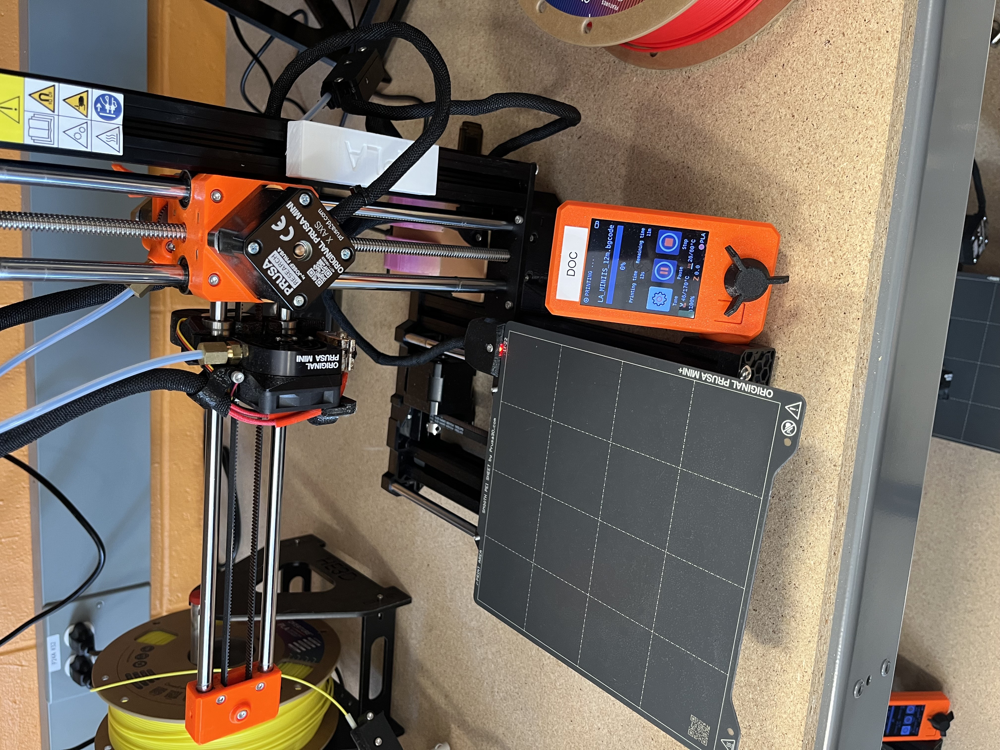
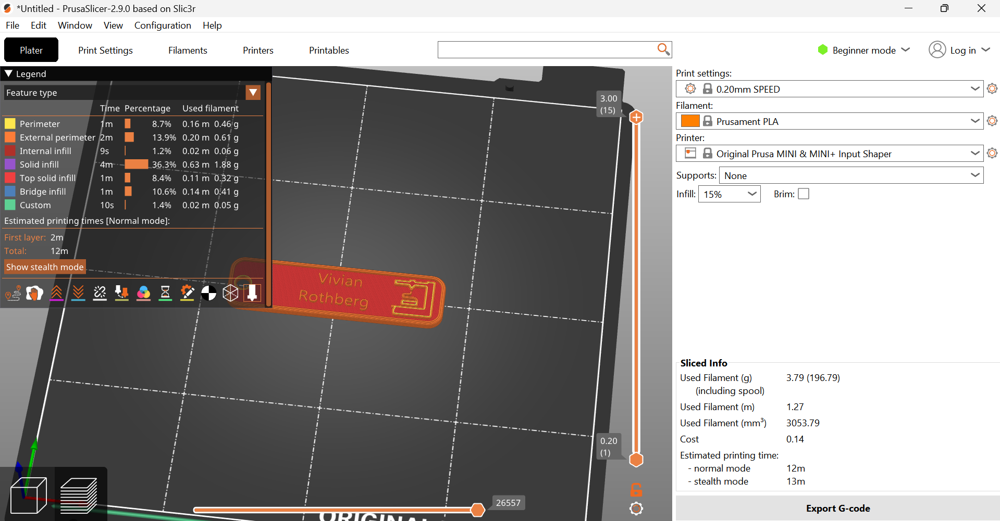
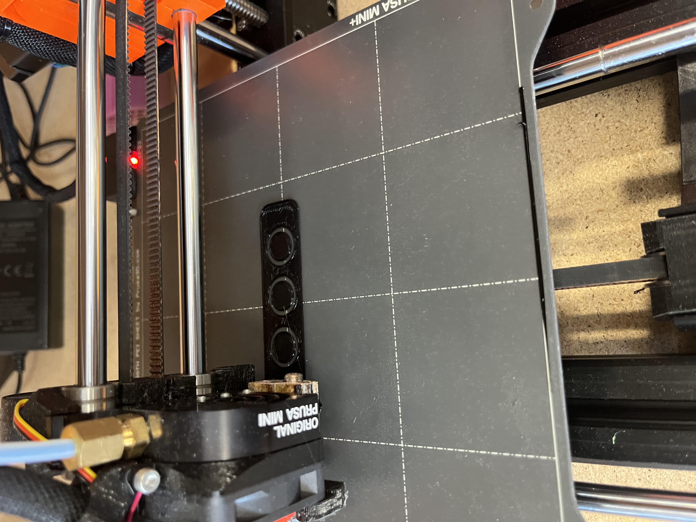
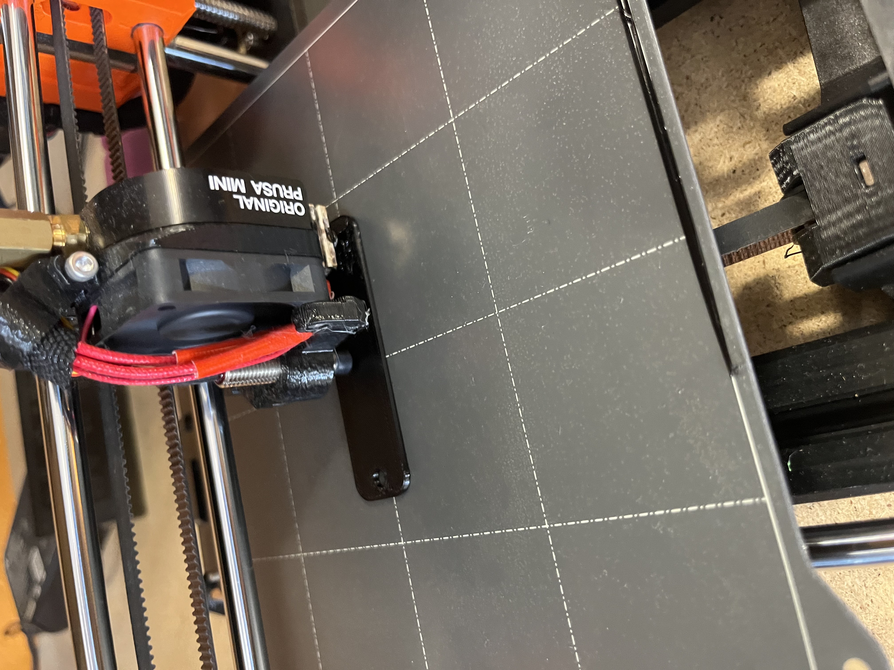
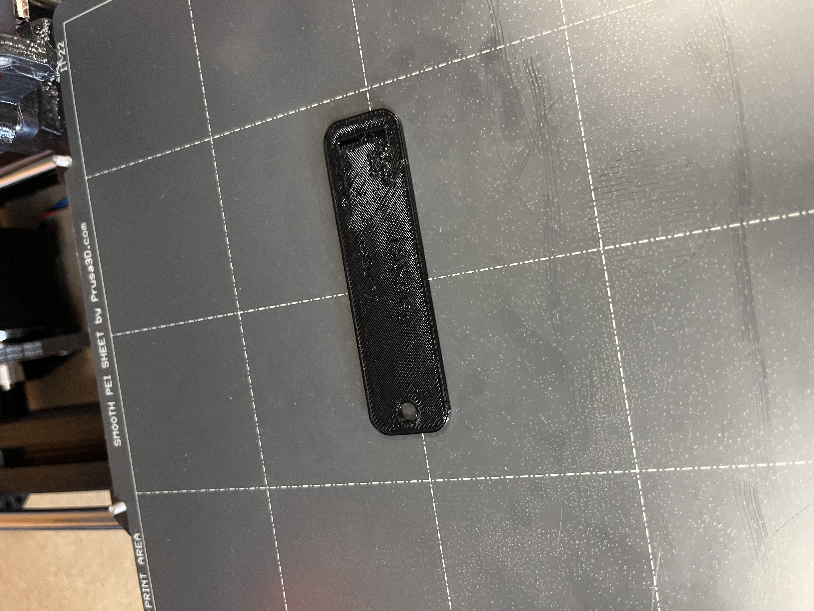
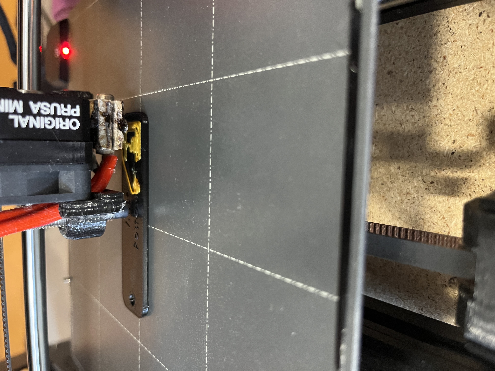
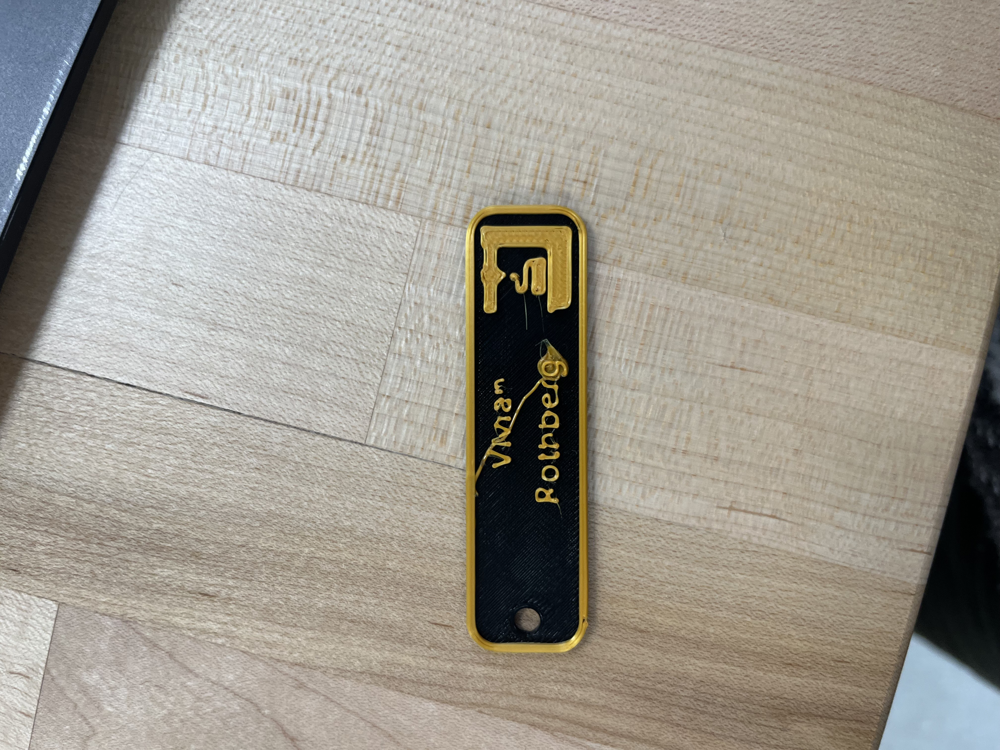
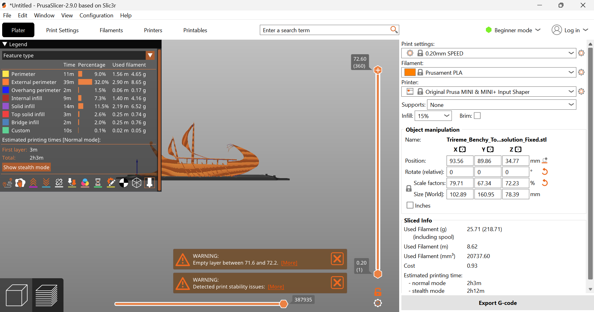
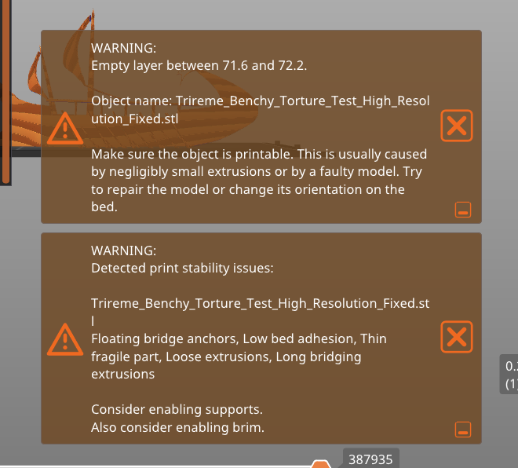
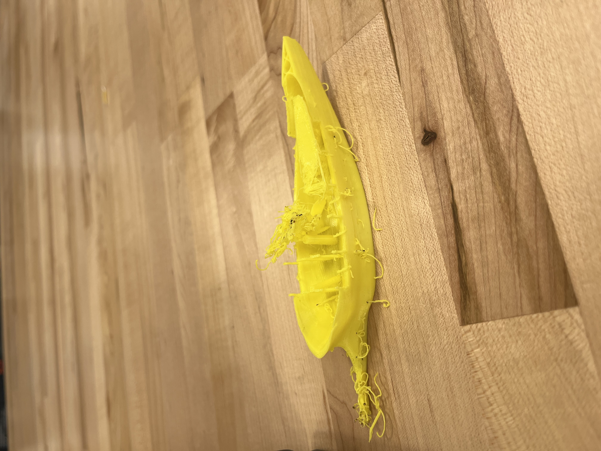

Project 1: Intorduction to 3D Printing
January 28th, 2025
Introduction and Overview
For the first project of the semester the goal was to become comfortable using the Prusa MINI+ 3D Printer and to become familiar with the PrusaSlicer. This was achieved by printing a simple name tag from a preexisting design file, and learning how to adjust the settings for the printer to run smoothly. Then printing the tag with a different color filament for the name. Once this was achieved, the limitations of the printer were explored using a ‘torture test’ or calibration test from an open source file. This process included once again adjusting the setting and configuration of the design in PrusaSlicer. Then running the test, which in this case failed part way through as expected. Lastly, using Bootstrap website templates and Sublime Text together, a website was designed and coded to display this project’s documentation. The process and results of this project can be seen below, including a reflection on what went wrong, why and what was learned from this trial and error.
Prusa MINI+ 3D Printer used for the project
Project Steps
- Download and install PrusaSlicer
- Download and slice name tag design
- Set up 3D printer and print name tag base
- Load second filament color and finish name tag print
- Find an open source torture test
- Download, adjust, and print torture test
- Reflect on the project
Name Tag Prints
Once PrusaSlicer was downloaded and set up, a predesigned name tag 3MF file was provided. The settings for this print needed to be adjusted to match the printer's settings. The nozzle on the printer is 0.4 mm so the filament had to match this size, and the speed needed to be set to 0.20 mm speed in PrusaSlicer. These settings allowed for the print to run smoothly, and lay the filament at the right speed to allow the tag to stick to the base and build upon it, and to avoid gaps or stringy lines of filament. Once this was done the 3MF file was exported to a thumb drive and put into the printer. The printer I worked with had filament preloaded into it, but I chose to change the color of my tag base to black, so I unloaded the original one and reloaded the new one after cutting it at a 45 degree angle to ensure it would go in easily. Then I ran a purge to get rid of the excess filament at the tip. This took two rounds of purging before the color came out purely black. Next I selected my name tag file and began the print.
Name tag file and settings
First Tag
The name tag printing went relatively smooth, however the print did not pause after the base was complete to change the filament and finish the rest of the design. As seen below the entire tag was printed in black, making the name itself difficult to see. I had walked away from the print assuming that it would stop at the intended point. Why the program did not stop I am still unsure, but it may have something to do with the information that the 3MF file stored in comparison to what an stl file would have. At the time I thought that perhaps someone else had bumped the machine while it was printing and disrupted its flow, therefore I decided to run the print a second time.
Base layers of the name tag
Base of the name tag
Final name tag
Second Tag
The second print was marginally more successful than the first. I made sure to stay by the printer to see if the program would pause to load the second filament, or if the file had a problem. It turned out that I had to physically pause the printer once the tag base was complete. Why this happened is still a bit of a mystery to me since the file and process I used was the same that others in the class did. Nevertheless, the filament color was changed and the extra was purged twice once again to get a purely gold color. However, this time the extra filament from the purge was not removed from the nozzle entirely so an excess glob was affixed to the tag. My professor helped me try to remove the excess while the printer was running (not the safest technique), but was ultimately unsuccessful. The final result was overall successful even with the few hitches and produced a two colored name tag.
Second name tag base and extra filament
Final name tag
Torture Test
The next step in the project was to test the bounds of the Prusa MINI+ 3D printers abilities. I looked through a couple different open source sites for 3D design files, including https://www.thingiverse.com/ and https://thangs.com/?sort=trending. I searched for torture tests and settled on a model of an Ancient Greek triremehttps://www.thingiverse.com/thing:2899487. This file initially had the boat configured to print from the tip of the boat as pictured below and was too large for the printer’s size. In PrusaSlicer I shrunk the object, adjusted the configuration and sunk the base of the boat below the surface of the printing board to ensure that the print would stick and not immediately slug the machine. Once I went to slice the design I received a couple of warnings about the feasibility of the print, a sign I was on the right path for testing the capability of the printer.

Trireme original configuration
Adjusted trireme
Print warnings
Trireme Printing
The printer was set up with the torture test file and the print began with a solid base and had no problems sticking initially since I had adjusted the base earlier. This is where the success ends. The print was projected to take two hours to complete, about 20 minutes into the print I had to leave, and when I returned the next day the trireme had printed partially before the smaller details became too stringy. A couple spots had begun to burn slightly and were removed once this started. This test did exactly what it was set up to do. It failed but later than expected, pushing the printer to the limits of ability. The biggest challenge of this design was the very thin unsupported details. I intentionally did not add supports to aid the design to observe what would happen, and this resulted in a stringy mess.

Trireme base
Final trireme print
Reflection and Concluding Thoughts